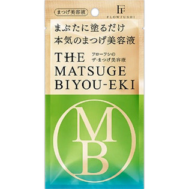

返回列表
产品名称：フローフシ ＴＨＥ まつげ美容液

アンリンシャス フローフシ ＴＨＥ まつげ美容液 ５ｇ
メーカー アンリンシャス
JANコード 4571194362244
商品の特徴
まぶたに塗るだけ
本気のまつげ美容液
- 成分・分量
- ＜全成分＞
水、BG、グリセリン、ペンチレングリコール、ガーネット末、ピロリジニルジアミノピリミジンオキシド、ヒトオリゴペプチド-1、ヒトオリゴペプチド-13、ヒトオリゴペプチド-9、パンテノール、ピオチノイルトリペプチド-1、オクタペプチド-2、アセチルテトラペプチド-3、アカツメクサ花エキス、オリゴペプチド-24、オリゴペプチド-20、加水分解ケラチン、水溶性プロテオグリカン、ハチミツ、水溶性コラーゲン、ヒアルロン酸Na、加水分解エラスチン、グルコシルセラミド、アラントイン、オタネニンジン根エキス、セイヨウシロヤナギ樹皮エキス、カミツレ花エキス、α-グルカン、デキストラン、レシチン、（アクリレーツ／アクリル酸アルキル（C10-30））クロスポリマー、キサンタンガム、塩化Na、リン酸Na、水酸化K、ペンテト酸、フェノキシエタノール
- 用法及び用量
- ＜使用方法＞
○1日1回、夜のスキンケアの最後にお使いください。
○薬指でまぶたとまつげに塗るだけ。
使用量は、片目につき米1粒大。
さらに！
○朝使うと、保湿効果でアイメイクのノリやもちがアップ。
○眉毛にも使用可能。憧れのハーフ眉に。